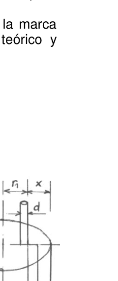

Indice de refraccion del agua (varilla)
PE20. Instituto Primo Capraro
San Carlos de Bariloche, Río Negro.
Se quiebra, se separa, pero no se rompe! Marco teórico El aparente quiebre de una varilla cilíndrica colocada “fuera del centro” de un recipiente (también cilíndrico) que está lleno de agua, puede usarse para medir el índice de refracción del agua (o de otro líquido transparente). Para ello utilizaremos un recipiente cilíndrico transparente conteniendo agua y un conjunto de varillas cilíndricas de distintos diámetros. Si se sostiene la varilla en el centro, con una parte de su longitud sumergida y se observa la varilla al mismo nivel horizontal que la superficie del agua, se puede notar que la parte sumergida se ve más ancha. Puede demostrarse fácilmente que la “magnificación” de la porción sumergida de la varilla, localizada en el centro (o en un plano que
OAF 2013 - 144 atraviese el centro) es (el índice de refracción del agua). Esto quiere decir que si la varilla tiene un diámetro , la parte sumergida se verá con un diámetro igual a . Ahora, si movemos la varilla alejándola del centro, en ángulo recto a tu línea de visión, notarás un aparente quiebre en la misma al nivel de la superficie del agua. Cuando la varilla se ubique a una distancia crítica x a partir del borde del recipiente, el quiebre (desplazamiento) será suficiente para que, como se muestra en la figura, el borde interno de la parte sumergida coincida con el borde externo de la parte no sumergida. Si se moviera la varilla un poco más del borde del recipiente, las porciones superior e inferior de la varilla aparecerían completamente separadas. Inténtalo (este efecto solamente puede observarse si el ancho de la varilla no es mayor que alrededor de un décimo del diámetro del recipiente). Si registramos la distancia crítica (x) entre el borde derecho de la varilla y el borde del recipiente cilíndrico, podremos determinar el índice de refracción del líquido. Para que la medición sea confiable, es esencial que el centro de la varilla se encuentre a lo largo de un diámetro perpendicular a tu línea de visión. Además, la varilla debe estar en posición vertical al plano de la superficie del agua. Para poder encontrar una expresión que nos permita obtener el índice de refracción buscado, podemos hacer las siguientes consideraciones:
- El ancho de la porción sumergida “magnificada” de la varilla es d n .
- Por el mismo criterio será 1 2 r n r (ver figura).
- En consecuencia como se aprecia en el gráfico: 1 2 r r d n
1 1 r r n d n
Si agrupamos los términos con y sacamos factor común nos queda: d n r n r 1 1
d r n r 1 1
(Ecuación 1) Pero, si observamos nuevamente en la figura, vemos que:
x D r 2 1
(Ecuación 2) Por lo que podemos reemplazar de la ecuación 2 en la ecuación 1, y despejar nuestra incógnita que es . Esto significa que si medimos con la regla el diámetro de la varilla ( ), el diámetro del recipiente ( ) y la distancia entre los bordes de la varilla y el recipiente ( ), podremos determinar el índice de refracción del líquido utilizado, que en este caso es agua. Para una mayor precisión se han medido los diámetros de las varillas cilíndricas con un calibre y se obtuvieron los valores indicados al final de la hoja.
Objetivo de la experiencia Determinar el índice de refracción ( ) del agua aprovechando las propiedades de la refracción de la luz en un recipiente cilíndrico.
Elementos disponibles Para realizar esta experiencia se dispone de:
Un recipiente cilíndrico transparente.
Un conjunto de 5 varillas cilíndricas de distintos diámetros.
Un broche para sostener las varillas.
Un taco de madera y cinta para fijar el broche
Una escuadra milimetrada.
Una hoja oficio cuadriculada
OAF 2013 - 145
Agua.
Requerimientos
- Se te pide que reemplaces r1 de la ecuación 2 en la ecuación 1 y despejes el índice de refracción n, con el fin de encontrar la expresión que te permita determinarlo.
- Determinar el índice de refracción del agua, con su correspondiente error asociado.
- Al finalizar la experiencia se deberá entregar un informe donde conste: 31.Planteo del problema.
- Método experimental utilizado.
- Resultados obtenidos y evaluación del error asociado.
- Discusión y comentarios.
Datos Diámetros de las varillas cilíndricas: d1 = 3.1 mm 0.1 mm d2 = 3.9 mm 0.1 mm d3 = 5.0 mm 0.1 mm d4 = 6.0 mm 0.1 mm d5 = 7.0 mm 0.1 mm
Recomendaciones Asegúrate que la mesa de trabajo se encuentre nivelada horizontalmente. Utiliza la escuadra para colocar las varillas perpendiculares a la mesa, lo que nos asegurará que la varilla se encuentre en posición vertical En el caso de derramar agua, secá la mesa con un trapo. Coloca debajo del recipiente cilíndrico la hoja cuadriculada en la que tienes marcada una línea que representará el diámetro del recipiente y sobre la cual realizarás los desplazamientos. Colócate para realizar las observaciones, siempre perpendicular al diámetro del recipiente y a nivel de la superficie del agua. Trabaja en forma ordenada y prolija.

Topic: Geometric Optics Metodi: Snell’s Law, Graph Linearization, Experimental Data Analysis Competenze: Physical Reasoning, Experimental Data Analysis Objects: Rod, Container Fonte: Testo (PDF) — p.3
**Indice di refraczione dell’acqua (varella) **
PE20. Istituto Primo Capraro
San Carlo di Bariloche, Rio Negro.
Si rompe, si separa, ma non si rompe! Marco teorico L’apparente rottura di un bastone cilindrico posto fuori di un recipiente (anche cilindrico) che è ricca di acqua, può essere usata per misurare l’indice di refraczione dell’acqua (o di un altro liquido trasparente). Per Per questo usiamo un contenitore cilindrico trasparente. contenente acqua e un insieme di bastone cilindrici di diversi diametri. Se si tiene il bastone al centro, con una parte del suo La lunghezza immersa e la verga osservata allo stesso livello L’acqua è più alta che la superficie, si può notare che la superficie è più alta che la superficie. la parte immersa sembra più ampia. Si può dimostrare. facilmente che la magnificazione della porzione immersa di una verga, situata al centro (o in un piano che
OAF 2013 - 144 (indice di refraczione dell’acqua) Questo significa che Se la bacchetta ha un diametro , la parte immersa verrà vista con un diametro uguale . a . Ora, se muoviamo la bacchetta allontanandola dal centro, a un angolo retto alla tua linea di La visione, noterai un’apparente rottura in esso a livello della superficie del acqua. Quando la verga è situata a una distanza critica x dal bordo del Il contenitore, la rottura (sosposizione) sarà sufficiente per che, come si mostra nella figura, il bordo interno della parte immersa coincide con il bordo esterno della parte non immersa. Se si muove il bastone un po’ più sul bordo del recipiente, le porzioni la parte superiore e inferiore del bastone appariranno completamente separate. Provaci. (questo effetto può essere osservato solo se la larghezza della canna non è maggiore) che circa un decimo del diametro del recipiente). Se registriamo la distanza critica (x) tra il bordo destro della bacchetta e il Il margine del recipiente cilindrico, possiamo determinare l’indice di refraczione del liquido. Per rendere la misurazione affidabile, è essenziale che il centro della misura sia il centro di La bacchetta si trova lungo un diametro perpendicolare alla tua linea di la visione. Inoltre, la vernice deve essere in posizione verticale al piano della superficie dell’acqua. Per poter trovare un’espressione che ci permetta di ottenere l’indice di La rifraczione ricercata, possiamo fare le seguenti considerazioni:
- La larghezza della porzione immersa magnificata della canna è d n .
- Per lo stesso criterio sarà 1 2 r n r (vedi figura).
- Di conseguenza, come si vede nel grafico: 1 2 r r d n
1 1 r r n d n
Se mettiamo insieme i termini con e togliendo il fattore comune, abbiamo: d n r n r 1 1
d r n r 1 1
(Equilibrio 1) Ma, se ci ripensiamo nella figura, vediamo che:
x D r 2 1
(Equilibrio 2) Quindi possiamo sostituire l’equazione 2 all’equazione 1 e chiarire la nostra incognita che è . Questo significa che se misuriamo con la regola il Il diametro del bastone ( ), il diametro del recipiente ( ) e la distanza tra i i bordi del bastone e del recipiente (), possiamo determinare l’indice di la refraczione del liquido utilizzato, che in questo caso è acqua. Per un’altra donna. Precisione sono stati misurati i diametri delle bacche cilindriche con un calibro e i valori indicati alla fine del foglio sono stati ottenuti.
Obiettivo dell’esperienza Determinare l’indice di refraczione () dell’acqua utilizzando le proprietà di la refraczione della luce in un recipiente cilindrico.
Elementi disponibili Per realizzare questa esperienza si dispone di:
Un recipiente cilindrico trasparente.
Un insieme di 5 bastone cilindrici di diversi diametri.
Una pinza per sostenere le bacche.
Un palo di legno e una cinta per fissare la pinza
Un esercito di millimetri.
Un foglio di lavoro quadricillato
OAF 2013 - 145
- L’acqua.
Richieste
- Vi viene chiesto di sostituire r1 dell’equazione 2 nell’equazione 1 e
- e’ il primo passo che si deve fare. che ti permetta di determinarlo.
- Determinare l’indice di refraczione dell’acqua, con il relativo errore associato.
- Al termine dell’esperienza è necessario presentare un rapporto che contiene: 31.Sostituzione del problema.
- Metodo sperimentale utilizzato.
- Risultati ottenuti e valutazione dell’errore associato.
- Discussioni e commenti.
Datos Diametri dei bastoni cilindrici: d1 = 3.1 mm 0.1 mm d2 = 3.9 mm 0.1 mm d3 = 5.0 mm 0.1 mm d4 = 6.0 mm 0.1 mm d5 = 7.0 mm 0.1 mm
Raccomandazioni Assicurarsi che la Tavola de lavoro se Trova
- Equazione
- Orisontale. Utilizzare il palo per mettere le bacche perpendicolari al tavolo, che ci assicurerà che la bacchetta sia in posizione verticale. Se si versa acqua, asciugate il tavolo con un mantello. Metti sotto il recipiente cilindrico la foglia quadricolata in cui hai una linea che rappresenta il diametro del recipiente e sulla quale effettuerai i viaggi. Colocate per fare le osservazioni, sempre perpendicolare al il diametro del recipiente e a livello della superficie dell’acqua. • Lavorare in modo ordinato e prolifico.
Topic: Geometric Optics Metodi: Snell’s Law, Graph Linearization, Experimental Data Analysis Competenze: Physical Reasoning, Experimental Data Analysis Objects: Rod, Container Fonte: Testo (PDF) — p.3
The water refractive index (bar) of the water ****
PE20. The first is the Capraro Institute.
St. Charles of Bariloche, Rio Negro.
It breaks, it breaks apart, but it doesn’t break! Theoretical framework The apparent breakdown of a cylindrical rod placed outside the centre of a container (also cylindrical) which is full of water, can be used to measure the index of refraction of water (or other transparent liquid). For This will be done using a transparent cylindrical container. containing water and a set of cylindrical rods of the diameter of the vehicle. If you hold the stick in the center, with a part of it The length of the submerged rod and the rod are observed at the same level horizontal than the water surface, it can be noted that the The submerged part looks wider. It can be proven . easily that the magnification of the submerged portion The rod is located in the centre (or in a plane which is
The following points shall be added: The average water refractive index (WIR) is the average water refractive index (WIR) of the water. This means that If the rod has a diameter , the submerged part will be seen with an equal diameter . a . Now, if we move the rod away from the center, at right angles to your line of In the field of vision, you’ll notice an apparent break in it at the surface level of the
- What? When the rod is located at a critical distance x from the edge of the The break (displacement) will be sufficient for the vessel to be In the figure, the inner edge of the submerged part matches the edge the outer part of the unsubmerged part. If you move the rod a little further from the edge of the container, the portions The upper and lower rods would appear completely separate. Try it . (this effect can only be observed if the width of the rod is not greater (approximately one tenth of the diameter of the container). If we record the critical distance (x) between the right edge of the rod and the The cylindrical vessel edge, we can determine the refractive index of the liquid. For measurement to be reliable, it is essential that the centre of the measurement is The rod is located along a diameter perpendicular to your line of vision. In addition, the rod must be in a vertical position to the plane of the surface of the water. To be able to find an expression that allows us to get the index of The following considerations can be made:
- The width of the submerged portion of the rod is magnified d n .
- By the same criteria it will be 1 2 r n r (see figure).
- Consequently as shown in the graph: 1 2 r r d n
1 1 r r n d n
If we group the terms with and take the common factor we have: d n r n r 1 1
d r n r 1 1
(Equation 1) But if we look again at the figure, we see that:
x D r 2 1
(Equation 2) So we can replace equation 2 in equation 1, and clear it up. our unknown that it is . This means that if we measure with the rule the The diameter of the rod ( ), the diameter of the container ( ) and the distance between the two The edges of the rod and the container ( ), we can determine the index of The resulting liquid is refracted, which is water. For an older woman . The diameter of the cylindrical rods with a caliber and a diameter of 50 mm or more are measured with precision. the values indicated at the end of the sheet were obtained.
The purpose of the experience Determine the refractive index () of water using the properties of the refraction of light in a cylindrical container.
Available items To carry out this experience:
A transparent cylindrical container.
A set of 5 cylindrical rods of different diameters.
A brooch to hold the rods.
A wooden stick and tape to fix the brooch .
A millimeter squad.
A square sheet of paper .
The following is the list of the countries of the European Union:
- It’s water.
Requirements
- You are asked to replace r1 of equation 2 in equation 1 and Clear the refractive index n, in order to find the expression I’ll let you determine that.
- Determine the refractive index of water, with its corresponding the associated error.
- At the end of the experience a report shall be submitted which shall contain: 31.Problem setting.
- Experimental method used.
- Results obtained and assessment of the associated error.
- Discussion and commentary.
Data from the report Diameter of cylindrical rods: d1 = 3.1 mm 0.1 mm d2 = 3.9 mm 0.1 mm d3 = 5.0 mm 0.1 mm d4 = 6.0 mm 0.1 mm d5 = 7.0 mm 0.1 mm
Recommendations for the future • Be sure That la Table de I work . se Find it . leveling horizontally. Use the squad to place the rods perpendicular to the table, Which will ensure that the rod is in a vertical position. • If water is spilled, dry the table with a cloth. Place the square sheet under the cylindrical container on which You have a line marked that will represent the diameter of the container and which you will travel over. Place the observations in a position always perpendicular to the the diameter of the container and at the level of the water surface. • Work in an orderly and prolific manner.
Topic: Geometric Optics Metodi: Snell’s Law, Graph Linearization, Experimental Data Analysis Competenze: Physical Reasoning, Experimental Data Analysis Objects: Rod, Container Fonte: Testo (PDF) — p.3